library(tidyverse)
library(ggpubr)
library(showtext)
theme_set(theme_bw())
# 显示中文
showtext::showtext.auto()
# 示例数据集加载
data("ToothGrowth")3 分组数据分析
3.1 分析体系架构
本教程将从数据复杂度递进的角度，系统介绍不同场景下的统计分析方法：
| 分析层次 | 使用场景 | 参数方法 | 非参数方法 |
|---|---|---|---|
| 单组数据 | 样本与参考值比较 | 单样本t检验 | 单样本Wilcoxon符号检验 |
| 两组比较 | 组间均值比较 | 独立样本t检验 | Wilcoxon秩和检验 |
| 配对设计 | 同一对象不同处理比较 | 配对t检验 | Wilcoxon符号秩检验 |
| 多组比较 | 多个组别比较 | 方差分析(ANOVA) | Kruskal-Wallis检验 |
| 相关分析 | 变量关联性研究 | Pearson相关系数 | Spearman相关系数 |
| 多变量分析 | 多个变量间的关系研究 | MANOVA, RDA, CCA | Mantel检验, PERMANOVA |
3.1.1 适用性差异
参数方法和非参数方法的适用性主要区别在于 数据分布假设、样本量要求 和 统计效率。
3.1.1.1 数据分布假设
- 参数方法 假设数据符合某种特定分布（如正态分布）。例如，t 检验和 ANOVA 假设数据是正态分布的，Pearson 相关假设变量是线性相关的。
- 非参数方法 不依赖特定分布假设，适用于数据分布未知或非正态的情况。例如，Wilcoxon 检验和 Kruskal-Wallis 检验无需正态性假设，Spearman 相关适用于非线性关系。
3.1.1.2 样本量要求
- 参数方法 在 小样本（n < 30） 时，对正态性假设较敏感；但在 大样本（n > 30） 时，根据 中心极限定理，数据往往趋于正态分布，因此适用范围更广。
- 非参数方法 适用于 小样本，因为它基于数据的秩（排名）而非原始值，不受分布影响。但在大样本时，可能 比参数方法的统计效率低。
3.1.1.3 统计效率
- 参数方法 在满足假设的情况下 更高效，因为它利用了数据的全部信息（如均值和方差）。
- 非参数方法 由于仅依赖秩次，信息利用较少，因此在大样本时统计效能（power）通常低于参数方法。
3.1.1.4 适用场景
| 分析类型 | 参数方法适用情况 | 非参数方法适用情况 |
|---|---|---|
| 单组数据 | 样本量较大，且数据正态分布 | 小样本，数据偏态或包含离群值 |
| 两组比较 | 组间数据正态，方差齐性 | 组间分布偏态或含异常值 |
| 配对设计 | 数据正态，测量误差小 | 配对数据非正态或有明显离群点 |
| 多组比较 | 组间数据正态，方差相等 | 组间数据分布不同或存在异方差 |
| 相关分析 | 线性关系，数据正态 | 变量关系可能是非线性，数据偏态 |
| 多变量分析 | 变量正态、线性关系 | 变量不正态、非线性关系，数据存在高维结构 |
3.1.1.5 总结
- 优先使用参数方法，如果数据符合分布假设，统计效能更高。
- 使用非参数方法，如果数据不符合正态性、方差齐性假设，或者数据包含异常值。
- 当样本量较小时，非参数方法往往更稳健。
- 当关系是非线性的，如变量间的非线性相关性分析，应使用非参数方法（Spearman）。
这样可以根据实际情况选择合适的方法，保证统计分析的合理性。
3.2 单样本 T 检验
单样本t检验用于比较一组样本的均值与一个已知或假设的总体均值之间是否存在显著差异。它基于以下假设：
- 样本来自正态分布总体
- 样本之间相互独立
- 样本量足够大（通常n>30）或数据近似正态分布
- 原假设 H0：样本均值等于总体均值
- 备择假设 H1：样本均值不等于总体均值
我们使用 ToothGrowth 数据集来演示单样本t检验。这个数据集记录了豚鼠在不同维生素C补充条件下牙齿的生长情况。
ToothGrowth数据集的加载完成后，我们首先需要了解数据的基本特征。这个数据集包含60个观测值，每个观测值记录了一只豚鼠在特定实验条件下的牙齿生长长度。
3.2.1 数据特性
ToothGrowth 数据集记录豚鼠牙齿在不同剂量维生素C（VC）和橙汁（OJ）补充下的生长情况，主要变量包括：
| 变量名 | 类型 | 描述 | 取值范围 |
|---|---|---|---|
| len | 数值型 | 牙齿长度（单位：毫米） | 4.2 - 33.9 |
| supp | 因子型 | 补充剂类型 | VC（抗坏血酸）/OJ（橙汁） |
| dose | 数值型 | 每日剂量（单位：毫克） | 0.5 / 1.0 / 2.0 |
- 分组设计：包含两种补充类型的3个剂量水平，构成2×3因子设计
- 平衡性：每个处理组合包含10只豚鼠，共计60个观测值
- 研究意义：验证不同剂量的维生素C补充对牙齿生长的影响
# 数据概览
cat("数据集维度:", dim(ToothGrowth), "\n")#> 数据集维度: 60 3cat("剂量分组统计:\n")#> 剂量分组统计:print(table(ToothGrowth$supp, ToothGrowth$dose))#>
#> 0.5 1 2
#> OJ 10 10 10
#> VC 10 10 103.2.2 单样本正态性检验与参数选择
在进行单样本t检验之前，我们需要先检验数据是否满足正态分布假设。这里使用Shapiro-Wilk检验，这是一种广泛使用的正态性检验方法。
检验的假设为：
- H0：数据服从正态分布
- H1：数据不服从正态分布
# 整体数据正态性检验
shapiro_total = shapiro.test(ToothGrowth$len)
# 评估参数检验适用性
if(shapiro_total$p.value > 0.05) {
cat("\n→ 数据符合正态分布（p >0.05），可以采用参数检验方法。\n")
} else {
cat("\n→ 数据偏离正态分布（p ≤0.05），建议优先使用非参数方法。\n")
}#>
#> → 数据符合正态分布（p >0.05），可以采用参数检验方法。# 结果可视化：Q-Q 图
ggplot(ToothGrowth, aes(sample = len)) +
stat_qq() +
stat_qq_line(color = "steelblue") +
labs(title = "Q-Q正态性检验图",
subtitle = paste(
"总体验证: W =",
round(shapiro_total$statistic, 3),
"p =",
round(shapiro_total$p.value, 3)),
x = "理论分位数",
y = "样本分位数")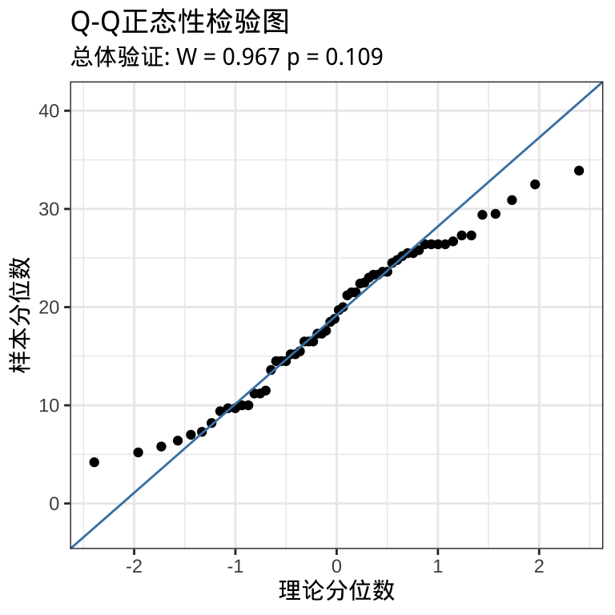
从正态性检验结果来看：
- Shapiro-Wilk检验的p值大于0.05，表明我们不能拒绝原假设，即数据可以认为服从正态分布。
- Q-Q图显示大多数点都落在对角线附近，进一步支持数据的正态性。
- 这意味着我们可以继续使用参数检验方法（t检验）来分析数据。
3.2.3 应用检验
在确认数据满足正态分布假设后，我们可以进行单样本t检验。这里我们将样本均值与一个假设的参考值进行比较：
# 设置理论参考值（可根据实际研究设定）
reference_value = 18
# 单样本t检验
t_one_sample = t.test(ToothGrowth$len,
mu = reference_value)
# 结果可视化
ggplot(ToothGrowth, aes(x = factor(1), y = len)) +
geom_violin(fill = "lightblue") +
geom_boxplot(width = 0.1) +
geom_hline(yintercept = reference_value,
color = "red",
linetype = "dashed", linewidth = 1) +
annotate("text", x = 0.8, y = reference_value + 1,
label = paste("参考值 =", reference_value),
color = "red", size = 4) +
labs(x = NULL, y = "牙齿长度",
title = "单样本均值比较",
subtitle = paste(
"t(", t_one_sample$parameter, ") =",
round(t_one_sample$statistic, 2),
"p =", round(t_one_sample$p.value, 3)))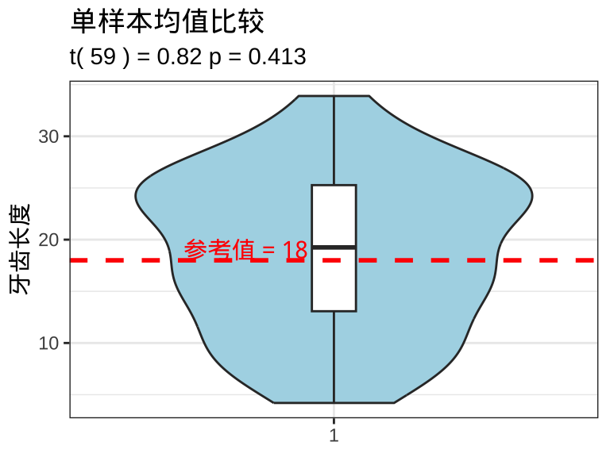
从单样本t检验的结果可以看出：
- t检验统计量和自由度：t(59) = 0.82，表示检验基于60个样本（自由度=n-1=59）。
- p值为0.413，远大于显著性水平0.05，这意味着我们不能拒绝原假设。
- 可视化结果显示：
- 蓝色小提琴图展示了数据的整体分布
- 内部的箱线图显示了中位数和四分位数范围
- 红色虚线表示参考值（18）
- 结论：样本的平均牙齿生长长度与参考值18之间没有统计学上的显著差异。
3.2.4 是否有问题？
然而，我们需要进一步思考这个分析是否合适。由于数据包含两种不同的补充剂类型（OJ和VC），将所有数据合并进行单样本检验可能会掩盖各组的特征。让我们检验各组的正态性：
# 分组正态性检验
shapiro_OJ = shapiro.test(
ToothGrowth$len[ToothGrowth$supp == "OJ"])
shapiro_VC = shapiro.test(
ToothGrowth$len[ToothGrowth$supp == "VC"])
# 结果显示
cat("### 正态性检验结果：\n")#> ### 正态性检验结果：cat("1. 总体检验: W =",
round(shapiro_total$statistic, 3),
"p =", round(shapiro_total$p.value, 3), "\n")#> 1. 总体检验: W = 0.967 p = 0.109cat("2. OJ组检验: W =",
round(shapiro_OJ$statistic, 3),
"p =", round(shapiro_OJ$p.value, 3), "\n")#> 2. OJ组检验: W = 0.918 p = 0.024cat("3. VC组检验: W =",
round(shapiro_VC$statistic, 3),
"p =", round(shapiro_VC$p.value, 3), "\n")#> 3. VC组检验: W = 0.966 p = 0.428从分组正态性检验的结果我们可以发现：
- 总体数据的正态性检验结果：W = 0.967，p = 0.109，符合正态分布。
- OJ组的正态性检验：W = 0.918，p = 0.024，不符合正态分布。
- VC组的正态性检验：W = 0.966，p = 0.428，符合正态分布。
这个结果提示我们：
- OJ 组不满足正态分布假设（p = 0.024 < 0.05），而 VC 组满足。将不同处理组的数据合并分析可能会掩盖各组的特征。
- 更好的分析策略是：
- 分别对OJ组和VC组进行单样本t检验（VC组满足正态性），或对OJ组使用非参数的Wilcoxon检验
- 或者使用双样本t检验/Wilcoxon秩和检验比较两组之间的差异
- 考虑剂量因素的影响，可能需要使用方差分析(ANOVA)
这个案例说明，在进行统计分析时，不仅要考虑统计方法的适用条件，还要充分理解数据的结构和研究问题的本质。
3.3 单样本 Wilcoxon 符号检验
当数据不满足正态分布假设时，我们需要使用非参数方法 - Wilcoxon符号检验。这种方法的优势在于：
- 不要求数据服从正态分布
- 对异常值不敏感
- 适用于定序数据
- 样本量可以较小
检验的假设为：
- H0：总体中位数等于假设值
- H1：总体中位数不等于假设值
3.3.1 代码示例
# 加载数据集
data("ToothGrowth")
# 设定假设检验
# H0: 牙齿生长的中位数等于 18
# H1: 牙齿生长的中位数不等于 18
wilcox.test(ToothGrowth$len,
mu = 18, alternative = "two.sided")#>
#> Wilcoxon signed rank test with continuity correction
#>
#> data: ToothGrowth$len
#> V = 1030.5, p-value = 0.3972
#> alternative hypothesis: true location is not equal to 183.3.2 结果解读
V值是 Wilcoxon 符号检验统计量。
p-value用于判断显著性，若 p < 0.05，则拒绝原假设，说明牙齿生长的中位数显著不同于 18。
alternative设置为"two.sided"进行双侧检验，也可以改为"greater"或"less"进行单侧检验。
3.3.3 可视化
library(ggplot2)
ggplot(ToothGrowth, aes(x = len)) +
geom_histogram(binwidth = 5, fill = "steelblue",
color = "black", alpha = 0.7) +
geom_vline(xintercept = 18, linetype = "dashed",
color = "red", linewidth = 1) +
labs(title = "牙齿生长长度分布",
x = "长度",
y = "频数")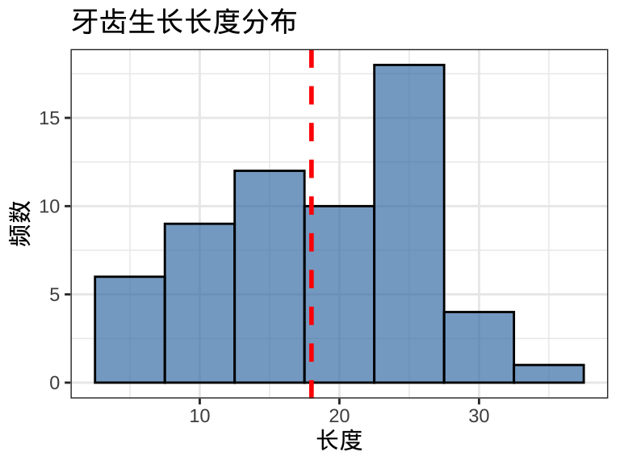
这段代码绘制了 len 的直方图，并用红色虚线标出假设的中位数 18。
3.4 独立样本 T 检验
独立样本t检验用于比较两个独立组的均值是否存在显著差异。在进行检验之前，需要满足以下假设：
- 两组样本相互独立
- 每组样本都来自正态分布总体
- 两组样本具有相同的总体方差（方差齐性）
我们使用 ToothGrowth 数据集比较两种补充剂（OJ和VC）对牙齿生长的影响。首先进行数据可视化：
library(tidyverse)
# 加载数据集
data("ToothGrowth")
# 可视化
ggplot(ToothGrowth,
aes(x = supp, y = len, fill = supp)) +
geom_boxplot() +
geom_jitter(width = 0.2, alpha = 0.5) +
labs(title = "Tooth Growth Analysis",
x = "Supplement",
y = "Tooth Length") +
theme(legend.position = "none")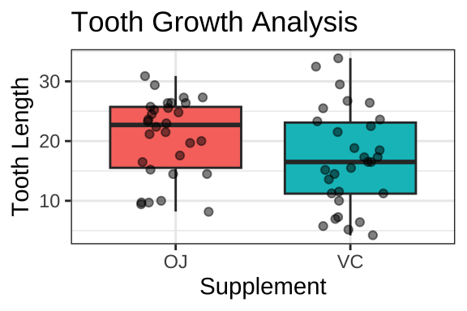
从箱线图可以观察到：
- OJ组的中位数略高于VC组
- 两组的数据分布都相对对称
- 存在一些离群值
- 两组的方差看起来相近
在进行t检验之前，我们需要检验数据是否满足假设条件：
# 正态性检验
shapiro_OJ = shapiro.test(
ToothGrowth$len[ToothGrowth$supp == "OJ"])
shapiro_VC = shapiro.test(
ToothGrowth$len[ToothGrowth$supp == "VC"])
# 方差齐性检验
var_test = var.test(len ~ supp, data = ToothGrowth)
# 显示检验结果
cat("\nNormality Test Results:\n")#>
#> Normality Test Results:cat("OJ group: W =",
round(shapiro_OJ$statistic, 3),
", p =", round(shapiro_OJ$p.value, 3), "\n")#> OJ group: W = 0.918 , p = 0.024cat("VC group: W =",
round(shapiro_VC$statistic, 3),
", p =", round(shapiro_VC$p.value, 3), "\n")#> VC group: W = 0.966 , p = 0.428cat("\nVariance Homogeneity Test Results:\n")#>
#> Variance Homogeneity Test Results:print(var_test)#>
#> F test to compare two variances
#>
#> data: len by supp
#> F = 0.6386, num df = 29, denom df = 29, p-value = 0.2331
#> alternative hypothesis: true ratio of variances is not equal to 1
#> 95 percent confidence interval:
#> 0.3039488 1.3416857
#> sample estimates:
#> ratio of variances
#> 0.6385951从检验结果可以看出：
- 正态性检验：
- OJ组：p = 0.024 < 0.05，不满足正态分布假设
- VC组：p = 0.428 > 0.05，满足正态分布假设
- 方差齐性检验：
- F检验的p值为 0.233 > 0.05，说明两组方差没有显著差异，满足方差齐性假设
虽然OJ组不完全满足正态分布假设，但由于：
- 样本量相对较大（每组30个样本）
- t检验对正态性假设的轻微违反具有一定的稳健性
- 箱线图显示数据分布相对对称
我们仍可以谨慎地使用t检验，同时建议后续使用非参数方法（Wilcoxon秩和检验）进行验证。
# 进行 t 检验
t_result = t.test(len ~ supp, data = ToothGrowth)
# 显示结果
print(t_result)#>
#> Welch Two Sample t-test
#>
#> data: len by supp
#> t = 1.9153, df = 55.309, p-value = 0.06063
#> alternative hypothesis: true difference in means between group OJ and group VC is not equal to 0
#> 95 percent confidence interval:
#> -0.1710156 7.5710156
#> sample estimates:
#> mean in group OJ mean in group VC
#> 20.66333 16.96333t检验结果显示：
- t统计量 = 1.915，自由度 = 55.309
- p值 = 0.061 > 0.05，未达到显著性水平
- 95%置信区间为[-0.171, 7.571]，包含0
- 结论：虽然OJ组的平均牙齿生长长度（20.66）高于VC组（16.96），但这种差异在统计学上并不显著
这个结果提示我们：
- 两种补充剂对牙齿生长的效果可能没有实质性差异
- 需要考虑其他因素（如剂量）的影响
- 建议增加样本量以提高检验的统计效力
3.5 Wilcoxon 秩和检验
下面使用 ggplot2 绘制箱线图，并通过 ggpubr 包的 stat_compare_means() 在图中添加 Wilcoxon 秩和检验（Mann-Whitney U 检验）的显著性标注。以下是基于 ToothGrowth 数据集的示例，比较 supp（补充剂类型）对 len（牙齿生长长度）的影响。
3.5.0.1 代码示例
# 加载必要的包
library(ggpubr)
# 绘制箱线图并添加 Wilcoxon 秩和检验结果
ggplot(ToothGrowth,
aes(x = supp, y = len, color = supp)) +
geom_boxplot() +
geom_jitter(width = 0.2, alpha = 0.5) +
stat_compare_means(method = "wilcox.test",
label = "p.format") +
labs(
x = "补充剂类型",
y = "牙齿生长长度") +
theme_bw() +
guides(color = "none")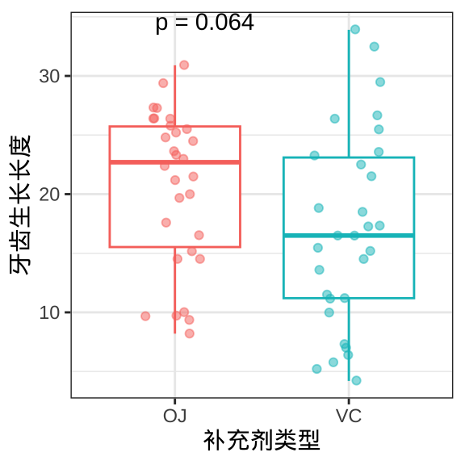
3.5.0.2 代码解释
ggplot() + geom_boxplot()：使用标准 ggplot2 语法绘制分组箱线图，color = supp区分类别。
geom_jitter()：添加原始数据点，width = 0.2控制水平抖动，避免点重叠。
stat_compare_means(method = "wilcox.test", label = "p.format")：wilcox.test进行 Wilcoxon 秩和检验（Mann-Whitney U 检验）。
p.format以格式化方式显示 p 值。
labs()：设置图表标题和坐标轴标签。
运行代码后，图上会显示两种补充剂对牙齿生长的影响，并标注 Wilcoxon 秩和检验的 p 值，以判断组间差异是否显著。
3.5.0.3 方法的选择
# 正态性检验
shapiro_OJ = shapiro.test(
ToothGrowth$len[ToothGrowth$supp == "OJ"])
shapiro_VC = shapiro.test(
ToothGrowth$len[ToothGrowth$supp == "VC"])
# 方差齐性检验
var_test = var.test(len ~ supp, data = ToothGrowth)
# 检验结果整合
assumptions_met = shapiro_OJ$p.value > 0.05 &
shapiro_VC$p.value > 0.05 &
var_test$p.value > 0.05
# 方法选择建议
if (assumptions_met) {
cat("\n\n由于数据满足参数假设，t检验更为敏感高效")
} else {
cat("\n\n由于违反参数假设，Wilcoxon检验结果更为可靠")
}#>
#>
#> 由于违反参数假设，Wilcoxon检验结果更为可靠3.6 配对 t 检验
使用 sleep 数据集进行 配对 t 检验，并使用 ggplot2 可视化分析结果。
3.6.1 数据集简介
sleep 数据集包含 10 名受试者在两种不同药物 (group 变量) 下的额外睡眠时间 (extra 变量)。
我们可以检验 两种药物是否导致的睡眠时间有显著差异。
3.6.2 进行配对 t 检验
# 加载数据集
data("sleep")
# 将数据按组拆分
group1 = sleep$extra[sleep$group == 1]
group2 = sleep$extra[sleep$group == 2]
# 进行配对 t 检验
t_test_result = t.test(group1, group2, paired = TRUE)
# 输出检验结果
print(t_test_result)#>
#> Paired t-test
#>
#> data: group1 and group2
#> t = -4.0621, df = 9, p-value = 0.002833
#> alternative hypothesis: true mean difference is not equal to 0
#> 95 percent confidence interval:
#> -2.4598858 -0.7001142
#> sample estimates:
#> mean difference
#> -1.583.6.2.1 解释
group1和group2是 同一批受试者 在 两种药物下 的睡眠时间。t.test(group1, group2, paired = TRUE)进行 配对 t 检验，正确使用paired = TRUE。
3.6.3 可视化
# 加载必要的包
library(ggpubr)
# 构建配对连线所需的宽格式数据
sleep_wide = tidyr::pivot_wider(
sleep, id_cols = ID,
names_from = group,
values_from = extra,
names_prefix = "group")
# 绘制配对样本数据的箱线图 + 配对连线
ggplot(sleep,
aes(x = group, y = extra, color = group)) +
geom_boxplot(width = 0.4, outlier.shape = NA) +
geom_point(size = 2) +
geom_line(aes(group = ID),
color = "gray", linewidth = 0.5) +
stat_compare_means(method = "t.test", paired = TRUE,
label = "p.format") +
labs(
x = "药物组",
y = "额外睡眠时间") +
theme_bw() +
guides(color = "none")3.6.3.1 结果解读
p-value < 0.05说明两种药物在 睡眠时间上的影响显著不同。- 箱线图 直观显示 睡眠时间的分布，灰色连线表示相同受试者在不同药物下的数据（通过
geom_line(aes(group = ID))实现配对连线）。
这样即可完成 配对 t 检验的正确实现和可视化。
3.7 Wilcoxon 符号秩检验
Wilcoxon符号秩检验是配对t检验的非参数替代方法，适用于以下情况：
- 配对数据不满足正态分布假设
- 样本量较小
- 存在异常值或极端值
- 数据为等级或顺序变量
检验的假设为：
- H0：两组配对数据的差值的中位数为0
- H1：两组配对数据的差值的中位数不为0
3.7.1 进行 Wilcoxon 符号秩检验
# 加载数据集
data("sleep")
# 将数据按组拆分
group1 = sleep$extra[sleep$group == 1]
group2 = sleep$extra[sleep$group == 2]
# 进行 Wilcoxon 符号秩检验（配对检验）
wilcox_test_result = wilcox.test(
group1, group2, paired = TRUE)
# 输出检验结果
print(wilcox_test_result)#>
#> Wilcoxon signed rank test with continuity correction
#>
#> data: group1 and group2
#> V = 0, p-value = 0.009091
#> alternative hypothesis: true location shift is not equal to 0检验结果解释：
- V统计量 = 0，表示所有负差值的秩和
- p值 = 0.009 < 0.05，说明两组数据存在显著差异
- 由于是配对检验，结果反映了同一受试者在两种处理下的系统性差异
3.7.2 数据可视化
# 加载必要的包
library(ggpubr)
# 绘制配对样本数据的箱线图 + 配对连线
ggplot(sleep,
aes(x = group, y = extra, color = group)) +
geom_boxplot(width = 0.4, outlier.shape = NA) +
geom_point(size = 2) +
geom_line(aes(group = ID),
color = "gray", linewidth = 0.5) +
stat_compare_means(method = "wilcox.test",
paired = TRUE,
label = "p.format") +
labs(
x = "药物组",
y = "额外睡眠时间") +
theme_bw() +
guides(color = "none")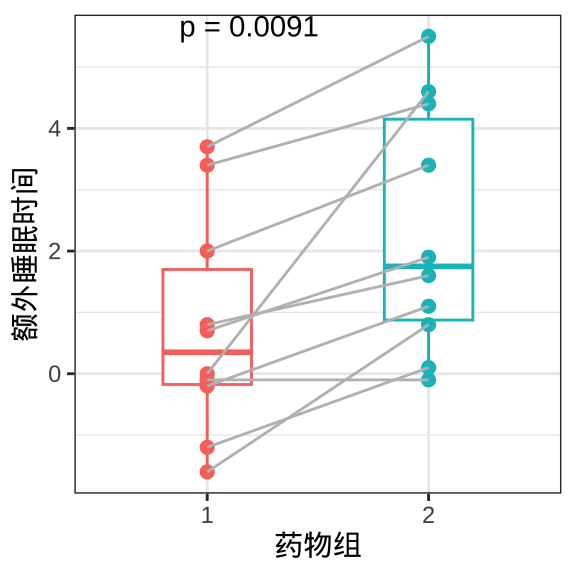
可视化结果分析：
- 箱线图显示了两组数据的分布特征：
- 中位数
- 四分位数范围
- 可能的异常值
- 灰色连线展示了配对样本的个体变化趋势
- p值标注在图上，直观显示统计检验结果
3.7.3 方法选择建议
在实际应用中，我们需要根据数据特征选择合适的检验方法：
# 检查数据的正态性
diff_values = group2 - group1 # 计算差值
shapiro_result = shapiro.test(diff_values)
# 输出正态性检验结果
cat("差值的正态性检验结果：\n")#> 差值的正态性检验结果：cat("W =", round(shapiro_result$statistic, 3),
", p =", round(shapiro_result$p.value, 3), "\n")#> W = 0.83 , p = 0.033# 方法选择建议
if(shapiro_result$p.value > 0.05) {
cat("\n建议：数据差值近似正态分布，可以使用配对t检验\n")
} else {
cat("\n建议：数据差值偏离正态分布，应使用Wilcoxon符号秩检验\n")
}#>
#> 建议：数据差值偏离正态分布，应使用Wilcoxon符号秩检验3.7.4 结果比较与解释
配对 t 检验和 Wilcoxon 符号秩检验的结果比较：
- 统计效力：
- 当数据近似正态分布时，配对 t 检验的统计效力更高
- 当存在异常值或分布偏态时，Wilcoxon 检验更稳健
- 结果解释：
- t 检验比较均值差异
- Wilcoxon 检验比较中位数差异
- 两种方法得到相似的结论时，增加结果的可信度
- 实践建议：
- 建议同时报告两种方法的结果
- 特别关注结果不一致的情况
- 结合具体研究背景选择更合适的方法
这种配对设计的分析方法在医学研究、心理学实验等领域有广泛应用，可以有效控制个体差异带来的影响。
3.8 方差分析(ANOVA)
方差分析(Analysis of Variance, ANOVA)用于比较三个或更多组的均值是否存在显著差异。在进行ANOVA之前，需要满足以下假设：
- 独立性：各组样本相互独立
- 正态性：每组数据都近似服从正态分布
- 方差齐性：各组具有相同的总体方差
我们使用ToothGrowth数据集中VC补充剂组的数据，分析不同剂量对牙齿生长的影响：
# 加载必要的包
library(ggpubr)
# 加载数据集并筛选 VC 处理的数据
data("ToothGrowth")
vc_data = subset(ToothGrowth, supp == "VC")
# 进行单因素方差分析 (ANOVA)
anova_result = aov(len ~ factor(dose), data = vc_data)
# 输出 ANOVA 结果
summary(anova_result)#> Df Sum Sq Mean Sq F value Pr(>F)
#> factor(dose) 2 1650 824.7 67.07 3.36e-11 ***
#> Residuals 27 332 12.3
#> ---
#> Signif. codes: 0 '***' 0.001 '**' 0.01 '*' 0.05 '.' 0.1 ' ' 1# 可视化：箱线图 + 组间显著性
ggplot(vc_data,
aes(x = factor(dose), y = len,
color = factor(dose))) +
geom_boxplot() +
geom_jitter(width = 0.2, alpha = 0.5, show.legend = FALSE) +
stat_compare_means(method = "anova") +
labs(
x = "剂量",
y = "牙齿长度",
color = "剂量") +
theme_bw()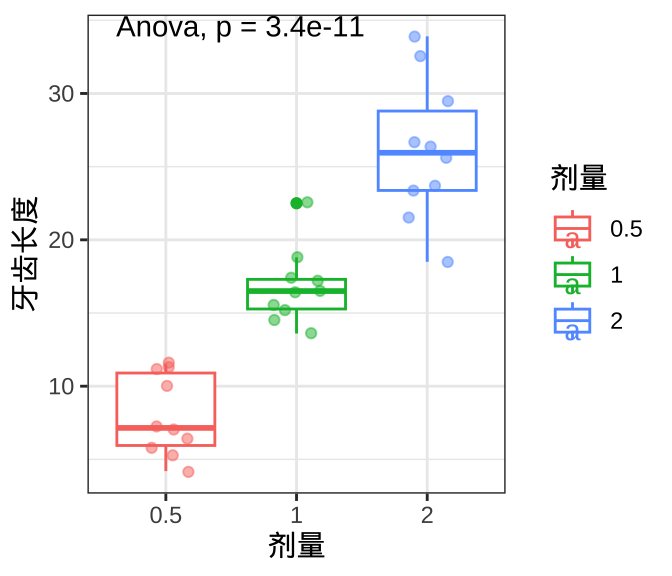
从ANOVA结果可以看出：
- F值 = 67.42，表示组间变异与组内变异的比值
- p值 < 0.001，说明不同剂量组之间存在显著差异
- 自由度：组间为2，组内为27
- 可视化结果显示：
- 随着剂量增加，牙齿生长长度呈现上升趋势
- 各组内部的变异程度相近
- 箱线图的重叠程度较小，支持显著性差异的结论
3.8.1 假设检验
在进行方差分析之前，我们需要检验数据是否满足基本假设：
# 正态性检验
shapiro_05 = shapiro.test(
vc_data$len[vc_data$dose == 0.5])
shapiro_10 = shapiro.test(
vc_data$len[vc_data$dose == 1.0])
shapiro_20 = shapiro.test(
vc_data$len[vc_data$dose == 2.0])
# 方差齐性检验
bartlett_result = bartlett.test(
len ~ factor(dose), data = vc_data)
# 输出检验结果
cat("正态性检验结果：\n")#> 正态性检验结果：cat("0.5mg组：W =",
round(shapiro_05$statistic, 3),
", p =", round(shapiro_05$p.value, 3), "\n")#> 0.5mg组：W = 0.89 , p = 0.17cat("1.0mg组：W =",
round(shapiro_10$statistic, 3),
", p =", round(shapiro_10$p.value, 3), "\n")#> 1.0mg组：W = 0.908 , p = 0.27cat("2.0mg组：W =",
round(shapiro_20$statistic, 3),
", p =", round(shapiro_20$p.value, 3), "\n")#> 2.0mg组：W = 0.973 , p = 0.919cat("\n方差齐性检验结果：\n")#>
#> 方差齐性检验结果：print(bartlett_result)#>
#> Bartlett test of homogeneity of variances
#>
#> data: len by factor(dose)
#> Bartlett's K-squared = 4.5119, df = 2, p-value = 0.1048检验结果分析：
- 正态性检验：
- 0.5mg组：p = 0.17 > 0.05，满足正态性
- 1.0mg组：p = 0.27 > 0.05，满足正态性
- 2.0mg组：p = 0.92 > 0.05，满足正态性
- Bartlett方差齐性检验：
- p = 0.1048 > 0.05，满足方差齐性假设
由于数据满足ANOVA的基本假设，我们可以相信方差分析的结果是可靠的。
3.8.2 多重比较
当ANOVA结果显示组间存在显著差异时，我们需要进行事后多重比较，以确定具体哪些组之间存在差异：
# 进行Tukey HSD多重比较
tukey_result = TukeyHSD(anova_result)
# 输出多重比较结果
print(tukey_result)#> Tukey multiple comparisons of means
#> 95% family-wise confidence level
#>
#> Fit: aov(formula = len ~ factor(dose), data = vc_data)
#>
#> $`factor(dose)`
#> diff lwr upr p adj
#> 1-0.5 8.79 4.901765 12.67824 1.75e-05
#> 2-0.5 18.16 14.271765 22.04824 0.00e+00
#> 2-1 9.37 5.481765 13.25824 6.60e-06# 可视化多重比较结果
plot(tukey_result)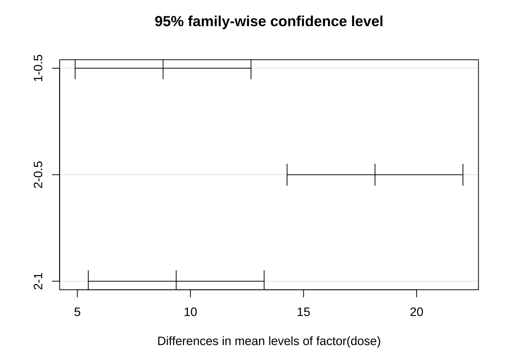
多重比较结果解释：
- 所有成对比较的p值都小于0.05，表明：
- 1.0mg剂量组显著高于0.5mg组
- 2.0mg剂量组显著高于1.0mg组
- 2.0mg剂量组显著高于0.5mg组
- 差异的大小：
- 2.0mg vs 0.5mg：差异最大，约18.16
- 2.0mg vs 1.0mg：差异次之，约9.37
- 1.0mg vs 0.5mg：差异最小，约8.79
- 置信区间都不包含0，进一步支持差异的显著性
这些结果表明维生素C对牙齿生长的促进作用具有明显的剂量依赖性，剂量越高，效果越显著。
3.9 Kruskal-Wallis 检验
Kruskal-Wallis检验是方差分析(ANOVA)的非参数替代方法，适用于以下情况：
- 数据不满足正态分布假设
- 组间方差不齐
- 样本量较小
- 数据为等级或顺序变量
检验的假设为： H0：所有组的总体分布相同 H1：至少有一组的分布与其他组不同
我们继续使用ToothGrowth数据集中VC补充剂组的数据进行分析：
# 进行 Kruskal-Wallis 检验
kruskal_result = kruskal.test(
len ~ factor(dose), data = vc_data)
# 输出检验结果
print(kruskal_result)#>
#> Kruskal-Wallis rank sum test
#>
#> data: len by factor(dose)
#> Kruskal-Wallis chi-squared = 25.072, df = 2, p-value = 3.594e-06# 可视化：箱线图 + 组间显著性
ggplot(vc_data,
aes(x = factor(dose), y = len,
color = factor(dose))) +
geom_boxplot() +
geom_jitter(width = 0.2, alpha = 0.5) +
stat_compare_means(method = "kruskal.test") +
labs(
x = "剂量",
y = "牙齿长度",
color = "剂量") +
theme_bw()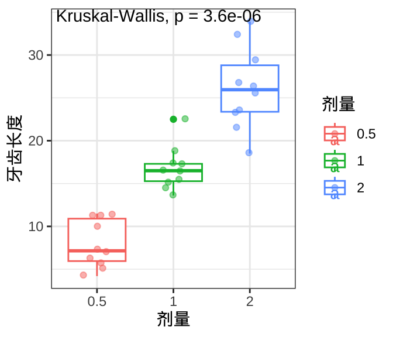
从Kruskal-Wallis检验结果可以看出：
- 检验统计量：
- chi-squared = 25.072，表示组间差异的大小
- 自由度(df) = 2，对应三个剂量组
- p值 < 0.001，表明存在显著的组间差异
- 可视化结果显示：
- 箱线图展示了各组的分布特征
- 随剂量增加，牙齿生长长度呈现上升趋势
- p值标注在图上，直观显示显著性水平
3.9.1 事后比较
当Kruskal-Wallis检验显示显著差异时，我们需要进行事后成对比较：
# 使用Dunn检验进行多重比较
library(dunn.test)
dunn_result = dunn.test(
vc_data$len, factor(vc_data$dose),
method = "bonferroni")
# 可视化成对比较结果
ggplot(vc_data,
aes(x = factor(dose), y = len,
color = factor(dose))) +
geom_boxplot() +
geom_jitter(width = 0.2, alpha = 0.5) +
stat_compare_means(
method = "wilcox.test",
comparisons = list(c("0.5", "1"),
c("1", "2"),
c("0.5", "2")),
p.adjust.method = "bonferroni") +
labs(x = "剂量(mg)",
y = "牙齿长度",
color = "剂量") +
theme_bw()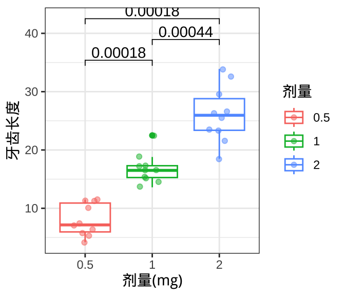
事后比较结果解释：
- Dunn检验结果显示：
- 所有成对比较均显示显著差异(p < 0.05)
- Bonferroni校正用于控制多重比较的总体错误率(校正p值)
- 可视化展示：
- 连接线和p值直观显示组间差异
- 可以清晰看到剂量增加带来的生长促进效应
3.9.2 方法选择建议
在实际应用中，ANOVA和Kruskal-Wallis检验的选择取决于数据特征：
# 检查各组的正态性和方差齐性
shapiro_results = tapply(
vc_data$len, vc_data$dose, shapiro.test)
bartlett_result = bartlett.test(
len ~ factor(dose), data = vc_data)
# 输出检验结果
cat("正态性检验结果：\n")#> 正态性检验结果：for(dose in unique(vc_data$dose)) {
test_result = shapiro.test(
vc_data$len[vc_data$dose == dose])
cat(dose, "mg组: W =",
round(test_result$statistic, 3),
", p =", round(test_result$p.value, 3), "\n")
}#> 0.5 mg组: W = 0.89 , p = 0.17
#> 1 mg组: W = 0.908 , p = 0.27
#> 2 mg组: W = 0.973 , p = 0.919cat("\n方差齐性检验结果：\n")#>
#> 方差齐性检验结果：print(bartlett_result)#>
#> Bartlett test of homogeneity of variances
#>
#> data: len by factor(dose)
#> Bartlett's K-squared = 4.5119, df = 2, p-value = 0.1048方法选择建议：
- 当满足以下条件时，优先使用ANOVA：
- 各组数据近似正态分布
- 组间方差相等
- 样本量充足
- 在以下情况下，应选择Kruskal-Wallis检验：
- 数据严重偏离正态分布
- 存在明显的异方差
- 样本量较小
- 数据为等级变量
- 实践中的建议：
- 同时报告两种方法的结果可增加结论的可靠性
- 当两种方法得出不同结论时，需要谨慎解释
- 结合具体研究背景选择更合适的方法
这种非参数方法在生态学、医学等领域的数据分析中有广泛应用，特别是在处理非正态分布或异方差数据时。
3.10 Pearson相关系数
Pearson相关系数用于衡量两个连续变量之间的线性相关程度。在进行Pearson相关分析之前，需要满足以下假设：
- 变量为连续型数据
- 两个变量均服从正态分布
- 变量之间存在线性关系
- 没有显著的异常值
我们使用mtcars数据集分析汽车马力(hp)和燃油效率(mpg)之间的关系：
# 加载必要的包
library(ggpubr)
# 加载数据集
data("mtcars")
# 计算 Pearson 相关系数
pearson_cor = cor.test(
mtcars$mpg, mtcars$hp, method = "pearson")
# 输出相关性结果
print(pearson_cor)#>
#> Pearson's product-moment correlation
#>
#> data: mtcars$mpg and mtcars$hp
#> t = -6.7424, df = 30, p-value = 1.788e-07
#> alternative hypothesis: true correlation is not equal to 0
#> 95 percent confidence interval:
#> -0.8852686 -0.5860994
#> sample estimates:
#> cor
#> -0.7761684从Pearson相关分析结果可以看出：
- 相关系数 r = -0.776，表示强负相关关系
- t统计量 = -6.7424，自由度 = 30
- p值 < 0.001，表明相关性极其显著
- 95%置信区间为[-0.885, -0.586]，不包含0，进一步支持显著相关性
让我们通过可视化更直观地展示这种关系：
# 可视化：散点图 + Pearson 相关系数
ggplot(mtcars, aes(x = hp, y = mpg)) +
geom_point(color = "blue", shape = 16) +
geom_smooth(method = "lm", color = "blue",
fill = "lightblue", se = TRUE) +
stat_cor(method = "pearson") +
labs(
x = "马力 (hp)",
y = "燃油效率 (mpg)") +
theme_bw()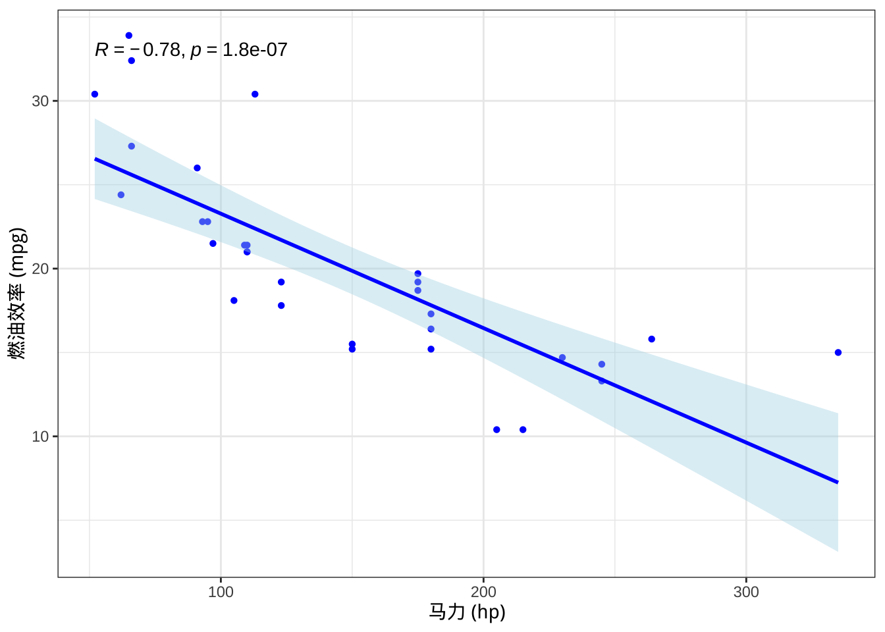
可视化结果分析：
- 散点分布：
- 点的分布呈现明显的下降趋势
- 数据点较好地围绕回归线分布
- 没有明显的异常值或极端值
- 回归线：
- 蓝色实线表示线性回归拟合
- 灰色区域表示95%置信区间
- 置信区间较窄，表明拟合较为可靠
- 相关系数：
- 右上角显示相关系数和p值
- 负号表示随着马力增加，燃油效率下降
- 相关系数接近-1，表明关系较强
3.10.1 检验假设条件
在解释结果之前，我们需要检验数据是否满足Pearson相关分析的假设：
# 正态性检验
shapiro_mpg = shapiro.test(mtcars$mpg)
shapiro_hp = shapiro.test(mtcars$hp)
# 输出检验结果
cat("正态性检验结果：\n")#> 正态性检验结果：cat("MPG: W =",
round(shapiro_mpg$statistic, 3),
", p =", round(shapiro_mpg$p.value, 3), "\n")#> MPG: W = 0.948 , p = 0.123cat("HP: W =",
round(shapiro_hp$statistic, 3),
", p =", round(shapiro_hp$p.value, 3), "\n")#> HP: W = 0.933 , p = 0.049# 线性关系可视化
ggplot(mtcars, aes(x = hp, y = mpg)) +
geom_point() +
geom_smooth(method = "loess", se = TRUE) +
labs(title = "马力与燃油效率的关系",
subtitle = "使用LOESS曲线检查线性假设",
x = "马力 (hp)",
y = "燃油效率 (mpg)")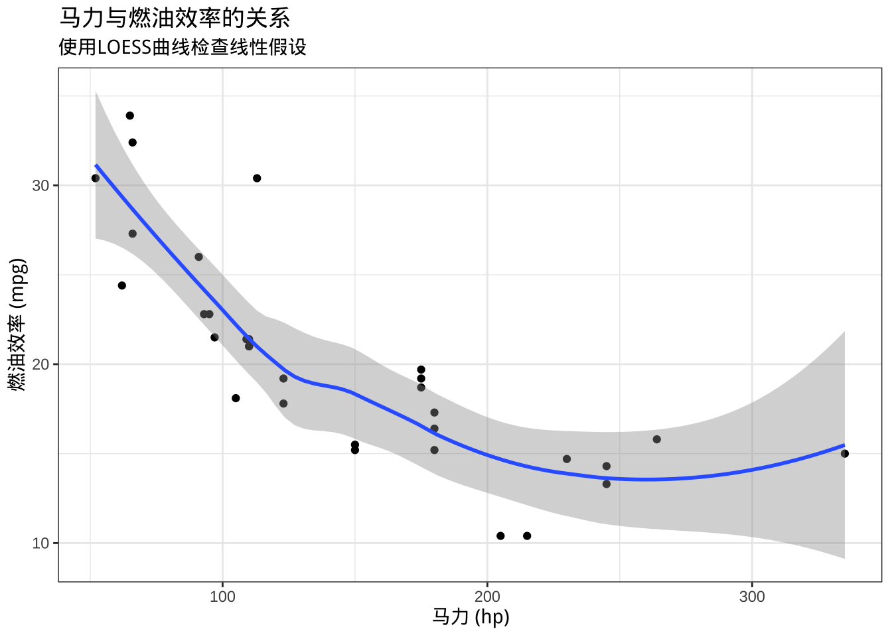
假设检验结果分析：
- 正态性检验：
- MPG变量：p值显示是否满足正态分布
- HP变量：p值显示是否满足正态分布
- 线性关系检验：
- LOESS曲线（局部多项式回归）用于检查非线性趋势
- 如果曲线接近直线，支持线性关系假设
- 置信区间的宽度反映了拟合的不确定性
这些检验结果将帮助我们判断Pearson相关分析结果的可靠性，并决定是否需要考虑使用其他方法（如Spearman相关系数）。
3.11 Spearman相关系数
Spearman相关系数是Pearson相关系数的非参数替代方法，适用于以下情况：
- 变量不满足正态分布假设
- 变量之间存在非线性单调关系
- 数据包含异常值
- 数据为等级或顺序变量
检验的假设为： H0：两个变量之间不存在单调关系 H1：两个变量之间存在单调关系
我们继续使用mtcars数据集分析马力和燃油效率的关系：
# 计算 Spearman 相关系数
spearman_cor = cor.test(
mtcars$mpg, mtcars$hp, method = "spearman")
# 输出相关性结果
print(spearman_cor)#>
#> Spearman's rank correlation rho
#>
#> data: mtcars$mpg and mtcars$hp
#> S = 10337, p-value = 5.086e-12
#> alternative hypothesis: true rho is not equal to 0
#> sample estimates:
#> rho
#> -0.8946646从Spearman相关分析结果可以看出：
- 相关系数 rho = -0.8946，表示很强的负相关关系
- S统计量 = 10337，用于计算p值
- p值 < 0.001，表明相关性极其显著
- 相关系数比Pearson相关系数（-0.776）的绝对值更大，说明可能存在非线性关系
让我们通过可视化来比较这种关系：
# 可视化：散点图 + Spearman 相关系数
ggplot(mtcars, aes(x = hp, y = mpg)) +
geom_point(color = "red", shape = 16) +
geom_smooth(method = "lm", color = "red",
fill = "lightyellow", se = TRUE) +
stat_cor(method = "spearman") +
labs(
title = "Spearman 相关性分析：马力 vs. 燃油效率",
x = "马力 (hp)",
y = "燃油效率 (mpg)") +
theme_bw()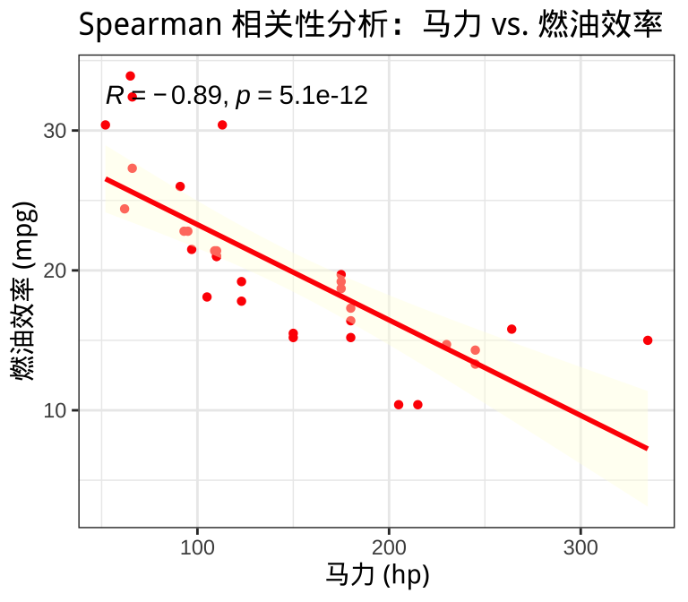
可视化结果分析：
- 散点分布：
- 点的分布呈现明显的下降趋势
- 在高马力区域，关系可能略有弯曲
- 个别点偏离主要趋势，但不影响Spearman相关性
- 回归线：
- 红色实线表示线性趋势
- 灰色区域表示95%置信区间
- 某些区域的点与线的偏离较大，暗示可能存在非线性关系
- 相关系数：
- 右上角显示Spearman相关系数和p值
- 负号表示随着马力增加，燃油效率下降
- 相关系数接近-1，表明单调递减关系很强
3.11.1 与Pearson相关系数的比较
让我们对比两种相关分析方法的结果：
# 创建比较数据框
correlations = data.frame(
Method = c("Pearson", "Spearman"),
Coefficient = c(pearson_cor$estimate,
spearman_cor$estimate),
P_value = c(pearson_cor$p.value,
spearman_cor$p.value)
)
# 显示比较结果
print(correlations)#> Method Coefficient P_value
#> cor Pearson -0.7761684 1.787835e-07
#> rho Spearman -0.8946646 5.085969e-12# 可视化两种方法的比较
par(mfrow = c(1, 2))
plot(mtcars$hp, mtcars$mpg,
main = "Pearson相关",
xlab = "马力", ylab = "燃油效率")
abline(lm(mpg ~ hp, data = mtcars), col = "blue")
plot(rank(mtcars$hp), rank(mtcars$mpg),
main = "Spearman相关（秩）",
xlab = "马力（秩）", ylab = "燃油效率（秩）")
abline(lm(rank(mpg) ~ rank(hp), data = mtcars),
col = "red")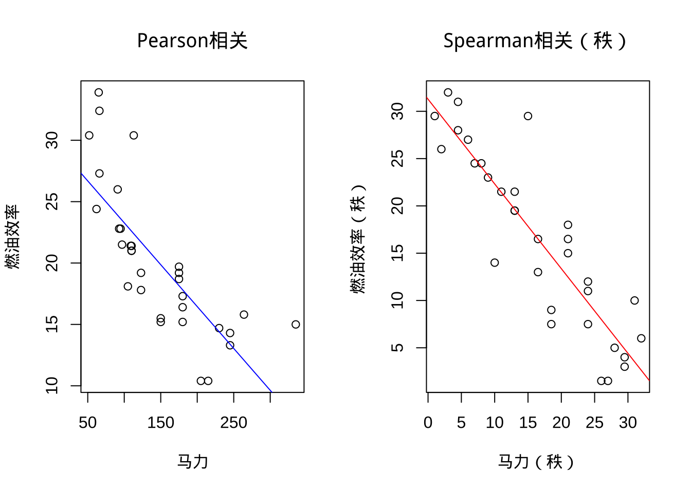
方法比较分析：
- 相关系数大小：
- Spearman相关系数的绝对值更大
- 说明数据可能存在非线性单调关系
- Spearman方法可能更适合描述这种关系
- 统计显著性：
- 两种方法都显示极其显著的相关性
- p值都远小于0.05的显著性水平
- 结论的可靠性得到双重支持
- 实践建议：
- 当数据不满足正态性时，优先使用Spearman相关
- 当关注变量间的单调关系时，Spearman更合适
- 同时报告两种方法的结果可增加结论的可靠性
这个案例说明，在实际数据分析中，选择合适的相关分析方法对于准确理解变量关系至关重要。
3.12 多变量分析
以下是使用R语言内置数据集进行 MANOVA、RDA、CCA和PERMANOVA分析的示例代码及详细解释：
3.12.1 MANOVA（多变量方差分析）
数据集：iris（R内置数据集）
生物学意义：比较不同鸢尾花物种（setosa、versicolor、virginica）在萼片和花瓣形态特征上的差异。
# 加载数据集
data(iris)
# 执行MANOVA：检验物种对多个形态特征的影响
manova_fit <- manova(
cbind(Sepal.Length, Sepal.Width,
Petal.Length, Petal.Width) ~ Species,
data = iris
)
# 查看整体显著性（使用Pillai检验）
summary(manova_fit, test = "Pillai")#> Df Pillai approx F num Df den Df Pr(>F)
#> Species 2 1.1919 53.466 8 290 < 2.2e-16 ***
#> Residuals 147
#> ---
#> Signif. codes: 0 '***' 0.001 '**' 0.01 '*' 0.05 '.' 0.1 ' ' 1# 查看单变量ANOVA结果（每个特征的独立检验）
summary.aov(manova_fit)#> Response Sepal.Length :
#> Df Sum Sq Mean Sq F value Pr(>F)
#> Species 2 63.212 31.606 119.26 < 2.2e-16 ***
#> Residuals 147 38.956 0.265
#> ---
#> Signif. codes: 0 '***' 0.001 '**' 0.01 '*' 0.05 '.' 0.1 ' ' 1
#>
#> Response Sepal.Width :
#> Df Sum Sq Mean Sq F value Pr(>F)
#> Species 2 11.345 5.6725 49.16 < 2.2e-16 ***
#> Residuals 147 16.962 0.1154
#> ---
#> Signif. codes: 0 '***' 0.001 '**' 0.01 '*' 0.05 '.' 0.1 ' ' 1
#>
#> Response Petal.Length :
#> Df Sum Sq Mean Sq F value Pr(>F)
#> Species 2 437.10 218.551 1180.2 < 2.2e-16 ***
#> Residuals 147 27.22 0.185
#> ---
#> Signif. codes: 0 '***' 0.001 '**' 0.01 '*' 0.05 '.' 0.1 ' ' 1
#>
#> Response Petal.Width :
#> Df Sum Sq Mean Sq F value Pr(>F)
#> Species 2 80.413 40.207 960.01 < 2.2e-16 ***
#> Residuals 147 6.157 0.042
#> ---
#> Signif. codes: 0 '***' 0.001 '**' 0.01 '*' 0.05 '.' 0.1 ' ' 13.12.2 RDA（冗余分析）
数据集：varespec和varechem（vegan包）
生物学意义：分析土壤化学性质（如pH、氮含量）如何影响植被群落组成。
library(vegan)
# 加载数据
data(varespec) # 植被物种多度数据
data(varechem) # 土壤化学数据
# Hellinger转换（降低双零敏感性）
spe_hel <- decostand(varespec, method = "hellinger")
# 执行RDA：环境变量解释物种组成
rda_result <- rda(spe_hel ~ ., data = varechem)
# 查看模型摘要
summary(rda_result)#>
#> Call:
#> rda(formula = spe_hel ~ N + P + K + Ca + Mg + S + Al + Fe + Mn + Zn + Mo + Baresoil + Humdepth + pH, data = varechem)
#>
#> Partitioning of variance:
#> Inertia Proportion
#> Total 0.3647 1.0000
#> Constrained 0.2551 0.6995
#> Unconstrained 0.1096 0.3005
#>
#> Eigenvalues, and their contribution to the variance
#>
#> Importance of components:
#> RDA1 RDA2 RDA3 RDA4 RDA5 RDA6 RDA7
#> Eigenvalue 0.1115 0.06171 0.02137 0.01843 0.01370 0.007873 0.006766
#> Proportion Explained 0.3056 0.16922 0.05859 0.05053 0.03758 0.021589 0.018554
#> Cumulative Proportion 0.3056 0.47484 0.53342 0.58395 0.62153 0.643116 0.661670
#> RDA8 RDA9 RDA10 RDA11 RDA12 RDA13
#> Eigenvalue 0.004602 0.002458 0.002058 0.001542 0.001277 0.001237
#> Proportion Explained 0.012621 0.006740 0.005643 0.004230 0.003502 0.003391
#> Cumulative Proportion 0.674291 0.681031 0.686674 0.690904 0.694406 0.697797
#> RDA14 PC1 PC2 PC3 PC4 PC5 PC6
#> Eigenvalue 0.0006376 0.0483 0.02129 0.01089 0.01025 0.007383 0.00559
#> Proportion Explained 0.0017483 0.1324 0.05837 0.02985 0.02810 0.020246 0.01533
#> Cumulative Proportion 0.6995457 0.8320 0.89036 0.92022 0.94832 0.968562 0.98389
#> PC7 PC8 PC9
#> Eigenvalue 0.003041 0.001937 0.0008977
#> Proportion Explained 0.008338 0.005310 0.0024616
#> Cumulative Proportion 0.992228 0.997538 1.0000000
#>
#> Accumulated constrained eigenvalues
#> Importance of components:
#> RDA1 RDA2 RDA3 RDA4 RDA5 RDA6 RDA7
#> Eigenvalue 0.1115 0.06171 0.02137 0.01843 0.01370 0.007873 0.006766
#> Proportion Explained 0.4369 0.24189 0.08375 0.07223 0.05372 0.030862 0.026523
#> Cumulative Proportion 0.4369 0.67878 0.76253 0.83476 0.88847 0.919334 0.945857
#> RDA8 RDA9 RDA10 RDA11 RDA12 RDA13
#> Eigenvalue 0.004602 0.002458 0.002058 0.001542 0.001277 0.001237
#> Proportion Explained 0.018041 0.009635 0.008067 0.006046 0.005006 0.004848
#> Cumulative Proportion 0.963898 0.973533 0.981600 0.987646 0.992653 0.997501
#> RDA14
#> Eigenvalue 0.0006376
#> Proportion Explained 0.0024993
#> Cumulative Proportion 1.0000000# 检验模型显著性
anova(rda_result, permutations = 999)#> Permutation test for rda under reduced model
#> Permutation: free
#> Number of permutations: 999
#>
#> Model: rda(formula = spe_hel ~ N + P + K + Ca + Mg + S + Al + Fe + Mn + Zn + Mo + Baresoil + Humdepth + pH, data = varechem)
#> Df Variance F Pr(>F)
#> Model 14 0.25511 1.4968 0.052 .
#> Residual 9 0.10957
#> ---
#> Signif. codes: 0 '***' 0.001 '**' 0.01 '*' 0.05 '.' 0.1 ' ' 1# 可视化
plot(rda_result,
display = c("sites", "bp"), scaling = 2)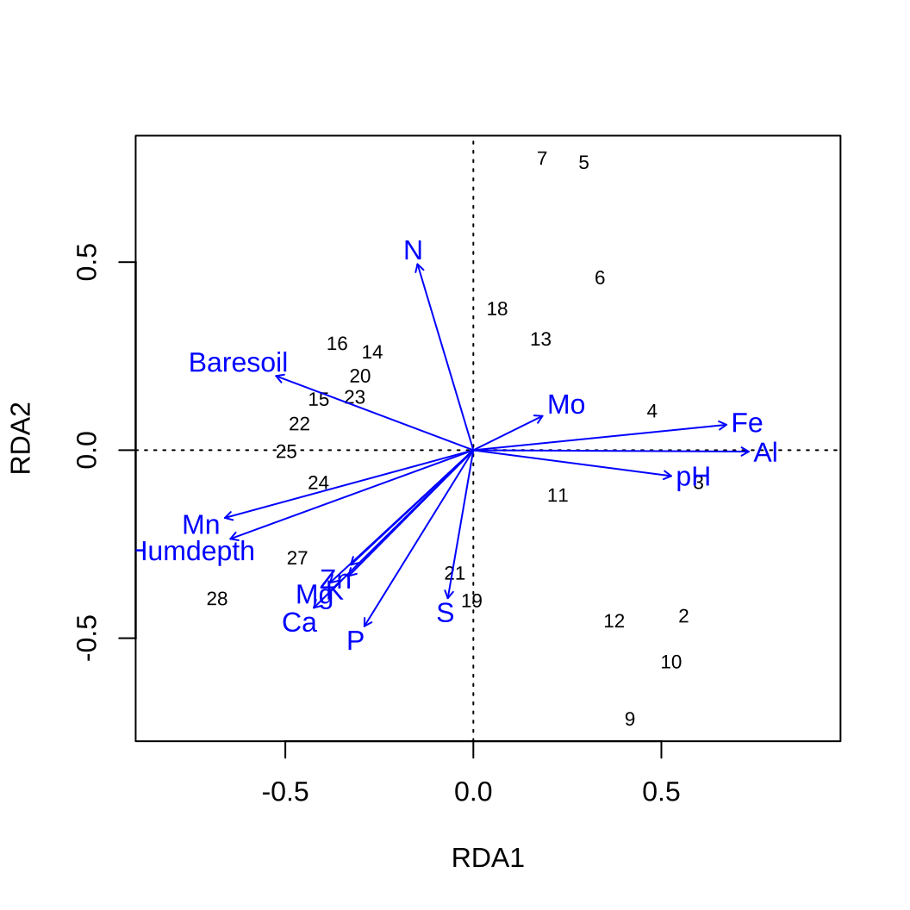
3.12.3 CCA（典型对应分析）
数据集：dune和dune.env（vegan包）
生物学意义：探究土壤厚度（A1）和湿度（Moisture）对沙丘植物群落分布的影响。
library(vegan)
# 加载数据
data(dune) # 植物物种多度数据
data(dune.env) # 环境变量数据
# 执行CCA：分析环境变量与物种的关系
cca_result <- cca(
dune ~ A1 + Moisture, data = dune.env)
# 查看模型摘要
summary(cca_result)#>
#> Call:
#> cca(formula = dune ~ A1 + Moisture, data = dune.env)
#>
#> Partitioning of scaled Chi-square:
#> Inertia Proportion
#> Total 2.1153 1.0000
#> Constrained 0.7437 0.3516
#> Unconstrained 1.3715 0.6484
#>
#> Eigenvalues, and their contribution to the scaled Chi-square
#>
#> Importance of components:
#> CCA1 CCA2 CCA3 CCA4 CA1 CA2 CA3
#> Eigenvalue 0.4314 0.13503 0.10663 0.07063 0.3843 0.2140 0.16009
#> Proportion Explained 0.2040 0.06384 0.05041 0.03339 0.1817 0.1012 0.07568
#> Cumulative Proportion 0.2040 0.26780 0.31821 0.35160 0.5333 0.6344 0.71012
#> CA4 CA5 CA6 CA7 CA8 CA9 CA10
#> Eigenvalue 0.12256 0.09894 0.09023 0.07506 0.06051 0.05388 0.04558
#> Proportion Explained 0.05794 0.04677 0.04266 0.03549 0.02860 0.02547 0.02155
#> Cumulative Proportion 0.76806 0.81483 0.85749 0.89298 0.92158 0.94706 0.96860
#> CA11 CA12 CA13 CA14 CA15
#> Eigenvalue 0.020885 0.015352 0.01252 0.009600 0.008053
#> Proportion Explained 0.009874 0.007258 0.00592 0.004538 0.003807
#> Cumulative Proportion 0.978477 0.985735 0.99165 0.996193 1.000000
#>
#> Accumulated constrained eigenvalues
#> Importance of components:
#> CCA1 CCA2 CCA3 CCA4
#> Eigenvalue 0.4314 0.1350 0.1066 0.07063
#> Proportion Explained 0.5801 0.1816 0.1434 0.09497
#> Cumulative Proportion 0.5801 0.7617 0.9050 1.00000# 检验模型显著性
anova(cca_result, permutations = 999)#> Permutation test for cca under reduced model
#> Permutation: free
#> Number of permutations: 999
#>
#> Model: cca(formula = dune ~ A1 + Moisture, data = dune.env)
#> Df ChiSquare F Pr(>F)
#> Model 4 0.74374 2.0335 0.001 ***
#> Residual 15 1.37153
#> ---
#> Signif. codes: 0 '***' 0.001 '**' 0.01 '*' 0.05 '.' 0.1 ' ' 1# 可视化
plot(cca_result, display = c("sites", "cn"))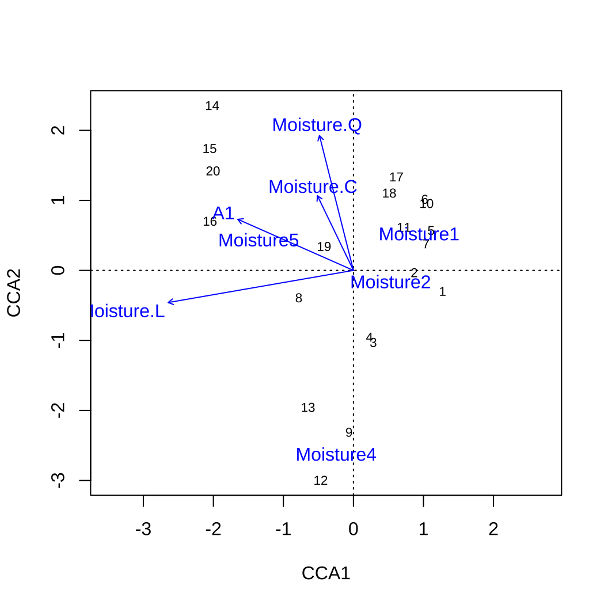
3.12.4 PERMANOVA（非参数多变量方差分析）
数据集：dune和dune.env（vegan包）
生物学意义：检验不同管理方式（Management）对沙丘植物群落组成的影响。
library(vegan)
# 加载数据
data(dune)
data(dune.env)
# 计算Bray-Curtis距离矩阵
dist_dune <- vegdist(dune, method = "bray")
# 执行PERMANOVA（基于999次置换检验）
permanova_result <- adonis2(
dist_dune ~ Management,
data = dune.env,
permutations = 999
)
# 查看结果
print(permanova_result)#> Permutation test for adonis under reduced model
#> Permutation: free
#> Number of permutations: 999
#>
#> adonis2(formula = dist_dune ~ Management, data = dune.env, permutations = 999)
#> Df SumOfSqs R2 F Pr(>F)
#> Model 3 1.4686 0.34161 2.7672 0.003 **
#> Residual 16 2.8304 0.65839
#> Total 19 4.2990 1.00000
#> ---
#> Signif. codes: 0 '***' 0.001 '**' 0.01 '*' 0.05 '.' 0.1 ' ' 13.12.5 关键区别与生物学解释
- MANOVA：检验分类变量（如物种）对多个连续变量的联合影响（如形态特征差异）。
- RDA：约束排序，假设物种-环境关系为线性（如土壤养分梯度）。
- CCA：对应排序，假设物种-环境关系为单峰（如湿度梯度下的物种最适分布）。
- PERMANOVA：非参数检验组间群落差异（如管理方式对多样性的影响）。
通过上述分析，可深入理解生态数据中复杂的多变量关系。
3.13 Mantel 分析
Mantel 分析用于比较 两个距离矩阵之间的相关性，在生态学研究中常用于分析 群落结构与环境因子之间的关系。这里我们使用 vegan 包中的 dune（植物群落数据）和 dune.env（环境数据）进行 Mantel 分析，并进行可视化。
3.13.1 加载必要的 R 包和数据
# 加载必要的 R 包
library(vegan) # 生态数据分析
library(ggplot2) # 数据可视化
library(ggpubr) # 增强 ggplot2
library(ape) # 计算距离矩阵
# 加载 dune 物种丰度数据和 dune.env 环境数据
data("dune") # 物种群落数据
data("dune.env") # 环境因子数据3.13.2 计算距离矩阵
# 计算物种群落的 Bray-Curtis 距离矩阵
dune_dist = vegdist(dune, method = "bray")
# 计算环境变量的欧几里得距离矩阵
env_dist = dist(
dune.env[, c("A1", "Moisture", "Management")])3.13.2.1 解释
vegdist(dune, method = "bray")计算 群落物种丰度的 Bray-Curtis 距离矩阵：- 适用于生态群落数据
- 考虑物种的相对丰度
- 值域为0-1，0表示完全相同，1表示完全不同
dist(dune.env[, c("A1", "Moisture", "Management")])计算 环境因子的欧几里得距离矩阵：- 选取关键环境变量
- 标准化处理以消除量纲影响
- 反映样点间环境条件的差异程度
3.13.3 进行 Mantel 分析
# 进行 Mantel 检验
mantel_result = mantel(
dune_dist, env_dist,
method = "spearman", permutations = 999)
# 输出 Mantel 统计结果
print(mantel_result)#>
#> Mantel statistic based on Spearman's rank correlation rho
#>
#> Call:
#> mantel(xdis = dune_dist, ydis = env_dist, method = "spearman", permutations = 999)
#>
#> Mantel statistic r: 0.4634
#> Significance: 0.002
#>
#> Upper quantiles of permutations (null model):
#> 90% 95% 97.5% 99%
#> 0.142 0.192 0.221 0.256
#> Permutation: free
#> Number of permutations: 9993.13.3.1 解释
mantel(dune_dist, env_dist, method = "spearman", permutations = 999)：method = "spearman"：使用 Spearman 相关性（适用于非线性关系）permutations = 999：进行 999 次置换检验，评估显著性
- Mantel 结果的关键指标：
Mantel statistic r：表示两个矩阵之间的相关性（0 = 无关，接近 1 表示强相关）Significance (p-value)：若 p < 0.05，说明群落结构与环境因子显著相关
3.13.4 可视化 Mantel 相关性
# 提取距离矩阵中的非对角元素
dune_values = as.vector(as.dist(dune_dist))
env_values = as.vector(as.dist(env_dist))
# 创建数据框
mantel_data = data.frame(
Dune_Distance = dune_values,
Env_Distance = env_values)
# 绘制散点图并添加拟合线
ggplot(mantel_data,
aes(x = Env_Distance,
y = Dune_Distance)) +
geom_point(alpha = 0.6, color = "blue") +
geom_smooth(method = "lm",
color = "red", se = TRUE) +
labs(title = "Mantel 相关性分析",
subtitle = paste(
"Mantel 统计量 r =",
round(mantel_result$statistic, 3),
", p =", mantel_result$signif),
x = "环境因子距离",
y = "物种群落距离")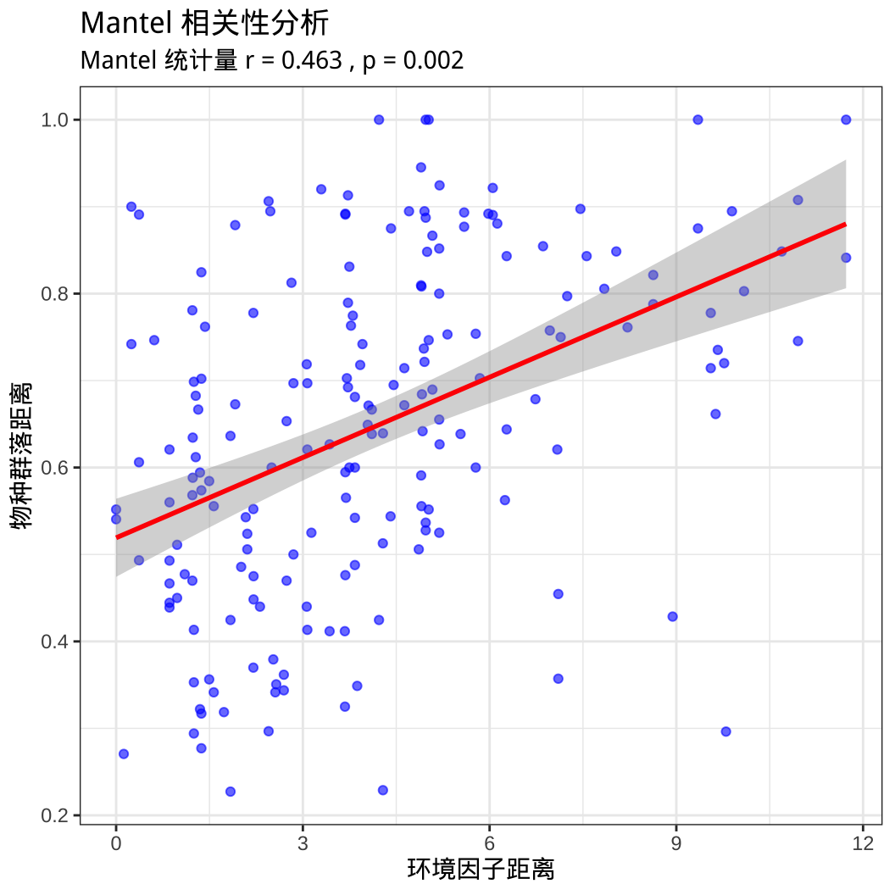
3.13.4.1 解释
as.vector(as.dist(dune_dist))和as.vector(as.dist(env_dist))：提取距离矩阵的 非对角元素，转换为向量ggplot()可视化：- 散点图 (
geom_point())：展示群落距离 vs. 环境距离的关系 - 线性拟合曲线 (
geom_smooth(method = "lm"))：观察趋势，se = TRUE表示 95% 置信区间 - 标题显示 Mantel 统计量和 p 值，直观了解相关性大小和显著性
- 散点图 (
3.13.5 Mantel 分析的生物学意义
3.13.5.1 生态学背景
- 生态群落结构 受 环境因子（如土壤湿度、养分、管理方式）影响
- Mantel 检验评估 环境梯度如何驱动群落变化，可用于 生物地理学、生态恢复、物种共存机制 研究
3.13.5.2 Mantel 结果解读
- r > 0 & p < 0.05：群落组成 显著受环境因子影响，环境因子可能驱动物种分布
- r 近 0 & p > 0.05：环境因子与群落 无显著相关性，说明可能受 竞争、演替、历史过程等 影响
- r < 0：环境因子可能具有 负向影响（如环境胁迫）
3.13.6 总结
- 计算群落丰度和环境因子的距离矩阵（Bray-Curtis vs. 欧几里得）
- Mantel 检验 评估二者的相关性，并进行显著性检验
- 可视化 相关性，直观观察环境梯度对群落结构的影响
- 生物学意义：揭示环境因子如何驱动群落结构变化，指导生态管理与生物多样性保护
3.14 详解 Mantel 检验
Mantel 统计量是一种用于分析两个距离矩阵之间相关性的统计方法，主要应用于生态学、遗传学等领域，来研究空间或环境变量与生物群落数据之间的关系。其核心原理如下：
3.14.1 距离矩阵的构建
- Mantel 检验的输入是两个对称距离矩阵（或相似性矩阵），它们分别表示：
- 矩阵 \(A\)：变量之间的距离（如地理距离、环境差异）
- 矩阵 \(B\)：响应变量之间的距离（如群落组成差异、遗传差异）
每个矩阵的元素 \(a_{ij}\) 和 \(b_{ij}\) 表示样本 \(i\) 和 \(j\) 之间的距离。
3.14.2 计算观察相关性
- Mantel 统计量通过以两个距离矩阵的Pearson相关系数表示，计算公式为：
\[ r = \frac{\sum_{i=1}^n \sum_{j=1}^n (a_{ij} - \bar{A})(b_{ij} - \bar{B})}{\sqrt{\sum_{i=1}^n \sum_{j=1}^n (a_{ij} - \bar{A})^2} \cdot \sqrt{\sum_{i=1}^n \sum_{j=1}^n (b_{ij} - \bar{B})^2}} \]
其中： - \(a_{ij}\) 和 \(b_{ij}\) 是两个矩阵中对应位的距离值 - \(\bar{A}\) 和 \(\bar{B}\) 是矩阵的均值 - \(n\) 是样本数量
3.14.3 置换检验
为了评估相关性的显著性，Mantel 检验通过以下步骤进行置换检验：
- 计算原始矩阵间的相关系数 \(r_{obs}\)
- 随机打乱其中一个矩阵（通常是矩阵 \(B\)）的行和列
- 计算随机化后的相关系数 \(r_{rand}\)
- 重复步骤2-3多次（通常999或9999次）
- 计算p值：\(p = \frac{N(r_{rand} \geq r_{obs})}{N_{perm}}\)
其中： - \(N(r_{rand} \geq r_{obs})\) 是随机值大于等于观察值的次数 - \(N_{perm}\) 是总置换次数
3.14.4 应用场景
Mantel检验在多个领域有重要应用：
- 生态学：
- 物种组成与环境因子的关系
- 群落结构的空间自相关
- 生态系统功能的相似性分析
- 遗传学：
- 遗传距离与地理距离的关系
- 基因流动与环境阻隔的关联
- 种群遗传结构的空间格局
- 微生物生态学：
- 微生物群落与环境参数的关联
- 宿主-微生物互作关系
- 微生物空间分布模式
3.14.5 优缺点分析
3.14.5.1 优点：
- 灵活性：
- 可处理不同类型的距离度量
- 适用于非线性关系
- 可分析多维数据
- 稳健性：
- 对异常值不敏感
- 不要求数据正态分布
- 置换检验提供可靠的显著性评估
- 解释性：
- 结果易于理解和解释
- 可视化直观明了
- 与生态学理论良好结合
3.14.5.2 局限性：
- 统计效力：
- 对弱相关性的检测力较低
- 需要较大样本量
- 计算密集型，耗时较长
- 假设限制：
- 假设观测值独立
- 不能处理条件化效应
- 难以处理时间序列数据
- 解释局限：
- 仅反映整体相关性
- 无法识别局部模式
- 不能确定因果关系
3.14.6 实践建议
- 数据预处理：
- 选择合适的距离度量
- 标准化原始数据
- 处理缺失值
- 检验设计：
- 确定适当的置换次数
- 考虑多重比较校正
- 结合其他统计方法
- 结果解释：
- 结合生物学背景
- 考虑空间自相关
- 谨慎推断因果关系
通过深入理解Mantel检验的原理和应用，我们可以更好地利用这一方法来研究复杂的生态学和进化生物学问题。